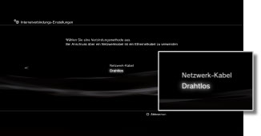
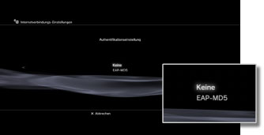
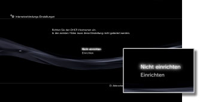
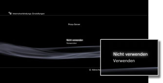
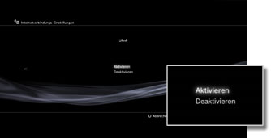

Einstellungen > Netzwerk-Einstellungen > Internetverbindungs-Einstellungen (weitere Einstellungen)
Internetverbindungs-Einstellungen (weitere Einstellungen)
Wenn Sie mit den grundlegenden Einstellungen keine Verbindung zum Internet herstellen können, müssen Sie die Einstellungen nach Bedarf ändern. Stellen Sie jede Option wie für Ihre individuelle Netzwerkumgebung erforderlich ein.
1. |
Wählen Sie |
|---|---|
2. |
Wählen Sie [Internetverbindungs-Einstellungen]. |
3. |
Wählen Sie [Benutzerdefiniert]. |
 (Einstellungen) >
(Einstellungen) >  (Netzwerk-Einstellungen).
(Netzwerk-Einstellungen).Verbindungsmethode
Sie können die Methode für das Herstellen der Verbindung zum Internet auswählen. Diese Einstellung steht nur auf PS3™-Systemen zur Verfügung, die mit der WLAN-Funktion ausgestattet sind.

| Netzwerk-Kabel | Herstellen einer Kabelverbindung mit einem Ethernetkabel |
|---|---|
| Drahtlos | Herstellen einer drahtlosen Verbindung über ein WLAN |
WLAN-Einstellungen
Stellen Sie die SSID für den Access Point ein. Diese Einstellung steht nur auf PS3™-Systemen zur Verfügung, die mit der WLAN-Funktion ausgestattet sind.

| Scannen | Ein nahe gelegener Access Point wird gesucht. Wählen Sie diese Einstellung, wenn Sie die SSID des Access Points nicht kennen. Das System erkennt nahe gelegene Access Points und zeigt Informationen zur SSID und zu Sicherheits-Einstellungen an. |
|---|---|
| Manuell eingeben | Geben Sie den Access Point an, indem Sie seine SSID manuell über eine Tastatur eingeben. Wählen Sie diese Einstellung, wenn Sie die SSID kennen. |
| Automatisch | Der Access Point wird automatisch eingestellt. Diese Einstellung steht nur in Regionen zur Verfügung, in denen PS3™-Systeme, die diese Funktion unterstützen, verkauft werden. Wählen Sie diese Einstellung, wenn Sie einen Access Point verwenden, der die automatische Konfiguration unterstützt. Gehen Sie nach den Anweisungen auf dem Bildschirm vor. |
WLAN-Sicherheitseinstellung
Legen Sie einen Verschlüsselungsschlüssel für einen Access Point fest. Diese Einstellung steht nur auf PS3™-Systemen zur Verfügung, die mit der WLAN-Funktion ausgestattet sind.

| Keine | Es wird kein Verschlüsselungsschlüssel festgelegt. |
|---|---|
| WEP | Legen Sie einen Verschlüsselungsschlüssel fest. Sie können den Verschlüsselungsschlüssel auf dem nächsten Bildschirm eingeben. Der Verschlüsselungsschlüssel wird als eine Reihe von Sternen angezeigt. |
| WPA-PSK / WPA2-PSK |
Authentifikationseinstellung
Diese Einstellungen stehen nur bei in Korea verkauften PS3™-Systemen zur Verfügung, die mit der WLAN-Funktion ausgestattet sind.

| Keine | Es werden keine Authentifikationsinformationen festgelegt. |
|---|---|
| EAP-MD5 | Legen Sie Authentifikationsinformationen fest, wenn Sie öffentliche WLAN-Services nutzen. Geben Sie auf dem nächsten Bildschirm Ihre Benutzer-ID und das Passwort ein. Einzelheiten dazu finden Sie in den Informationen vom öffentlichen WLAN-Serviceprovider. |
Ethernet-Betriebsmodus
Legen Sie die Ethernet-Datenübertragungsrate und den Betriebsmodus fest. In der Regel wählen Sie [Autom. Suchen].
| Autom. Suchen | Grundlegende Einstellungen werden automatisch vorgenommen. |
|---|---|
| Manuelle Einstellungen | Stellen Sie die Ethernet-Datenübertragungsrate und den Betriebsmodus manuell ein. |
Einstellung der IP-Adresse
Legen Sie die Methode zum Beziehen einer IP-Adresse beim Herstellen der Verbindung zum Internet fest.
| Automatisch | Verwenden Sie die vom DHCP-Server zugeordnete IP-Adresse. Sie können den DHCP-Server-Hostnamen auf dem nächsten Bildschirm eingeben. |
|---|---|
| Manuell | Legen Sie die IP-Adresse manuell fest. Sie können Werte für die IP-Adresse, die Subnetzmaske, den Standard-Router und den primären und sekundären DNS auf dem nächsten Bildschirm eingeben. |
| PPPoE | Stellen Sie eine Verbindung zum Internet über PPPoE her. Sie können auf dem nächsten Bildschirm Ihre Benutzer-ID und das Passwort eingeben. |
DHCP
Nehmen Sie die Einstellung für den DHCP-Hostnamen vor. In der Regel wählen Sie [Nicht einrichten].

| Nicht einrichten | Der DHCP-Hostname wird nicht eingerichtet. |
|---|---|
| Einrichten | Der DHCP-Hostname wird eingerichtet. |
DNS-Einstellung
Stellen Sie den DNS-Server ein.
| Automatisch | Die DNS-Server-Adresse wird automatisch bezogen. |
|---|---|
| Manuell | Geben Sie die DNS-Server-Adresse manuell ein. |
MTU
Konfigurieren Sie den beim Übertragen von Daten verwendeten MTU-Wert. In der Regel wählen Sie [Automatisch].
| Automatisch | Der MTU-Wert wird automatisch eingestellt. |
|---|---|
| Manuell | Geben Sie die maximale Größe von Datenpaketen (in Byte) an, die bei einer Übertragung gesendet werden kann. |
Proxy-Server
Legen Sie den zu verwendenden Proxy-Server fest.

| Nicht verwenden | Es soll kein Proxy-Server verwendet werden. |
|---|---|
| Verwenden | Verwenden Sie einen Proxy-Server. Sie können die Adresse und Port-Nummer des Proxy-Servers auf dem nächsten Bildschirm eingeben. |
UPnP
Legen Sie fest, ob UPnP (Universal Plug and Play) aktiviert oder deaktiviert werden soll.

| Aktivieren | UPnP wird aktiviert. |
|---|---|
| Deaktivieren | UPnP wird deaktiviert. |
Anmerkung
Wenn [Deaktivieren] eingestellt wird und Sie die Sprach-/Video-Chat-Funktion oder Kommunikationsfunktionen von Spielen verwenden, ist die Kommunikation mit Dritten möglicherweise eingeschränkt.